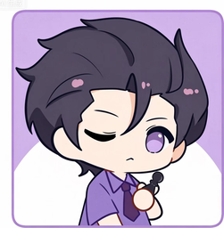

第 1 题 / 共 80 题
0%
人格档案馆
多维深度测试 · 暗中校验
40题精简
80题完整
切换
请选择你「大概率会做的真实反应」，而非「你认为更体面的答案」。部分题目为一致性检验题，不会影响最终结果。
一键免费生成报告
温柔滤镜
毒舌锐评
维度解读
成长建议

INTJ
紫老头
外向 E — 内向 I
I 偏向
50%
实感 S — 直觉 N
N 偏向
50%
思考 T — 情感 F
T 偏向
50%
判断 J — 感知 P
J 偏向
50%
马基雅维利 — 利他主义
利他偏向
50%
依恋焦虑 — 依恋回避
安全型偏向
50%
情绪稳定性
中等
50%
竞争性
中等
50%
🤔 看看你和哪种人格最合拍？
📸 生成专属人格卡片
重新测试
图片已生成！
结果仅供参考 · 不构成任何诊断
长按图片保存到相册